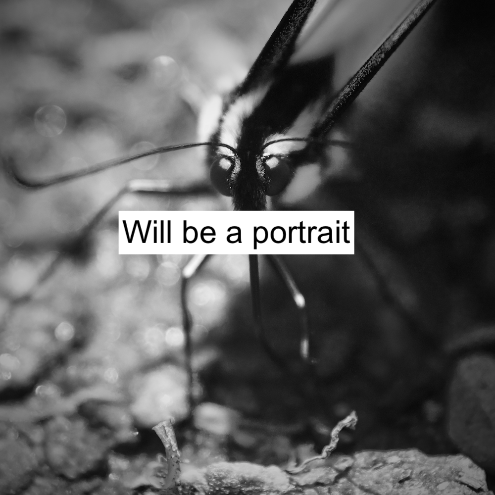

I am a junior at White Plains High School. My favorite subjects are math and science. In my free time, I run, hike, read, bike, program, and play old videogames. I am passionate about social issues such as human rights and discrimination, as well as environmental issues, such as climate change.